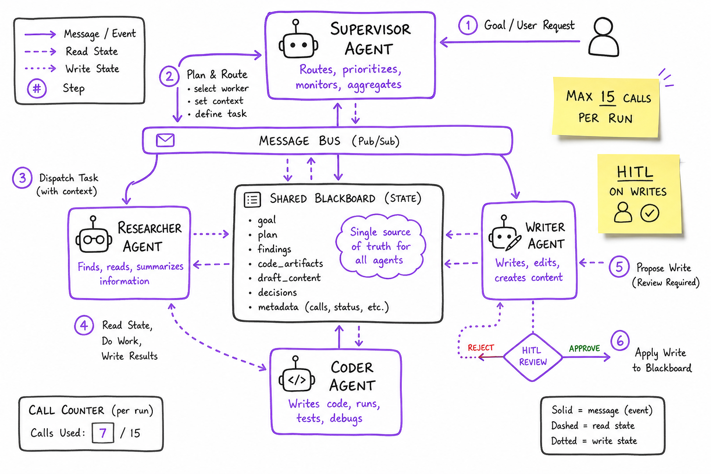
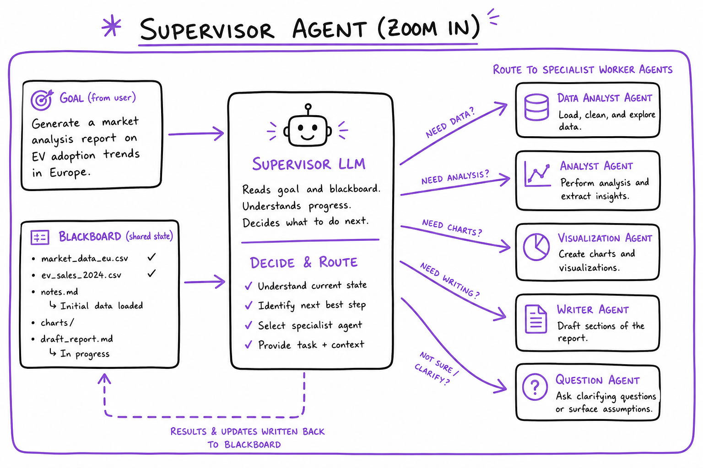
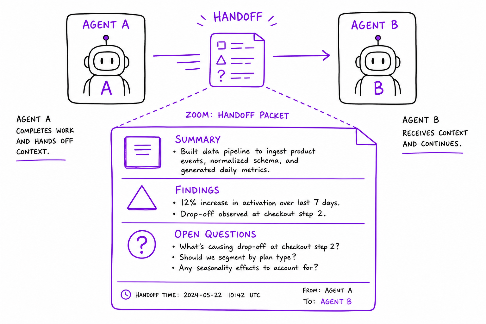

Multi-Agent Orchestration // Systems
Coordinate multiple LLM agents: supervisor routing, hierarchical teams, peer handoffs, shared blackboard state. Know when one agent beats many.

Multi-agent patterns: supervisor dispatches to specialist agents (research, code, writer), shared state store, message bus, and termination controller.
01 — What & Why
Complex tasks decompose across specialists. Orchestration defines who talks to whom, shared state, and stop conditions.
01a — Core Concepts
| Term | Definition | Gotcha |
|---|---|---|
| Supervisor | Router agent assigns subtasks | Single point of failure |
| Worker agent | Specialist with tool subset | Tool sprawl if unbounded |
| Handoff | Transfer conversation to another agent | Context loss without summary |
| Blackboard | Shared mutable state all agents read/write | Race conditions without locks |
01b — API Surface
# LangGraph supervisor pattern
graph.add_node("supervisor", supervisor_llm)
graph.add_node("researcher", research_agent)
graph.add_conditional_edges("supervisor", route_to_worker)
# CrewAI
crew = Crew(agents=[researcher, writer], tasks=[t1, t2], process=Process.hierarchical)02 — When to Use / When NOT
| Pattern | Use When | Skip When |
|---|---|---|
| Single agent | 3–5 tool calls suffice | Always — start here |
| Supervisor | Distinct specialist roles | Simple Q&A |
| Peer debate | High-stakes reasoning | Latency-sensitive chat |
03 — Architecture
User -> Supervisor Agent -> [Research | Code | Writer] Workers
^ |
+---- Blackboard State --+04 — Deep Dive: Supervisor

Supervisor agent routing tasks to researcher, coder, and writer specialists
Supervisor LLM reads goal + blackboard, emits next_worker. Cap routing decisions at 10 to control cost.
05 — Deep Dive: Hierarchical Teams
Manager agent delegates to sub-teams (research sub-crew). CrewAI Process.hierarchical. Depth ≤2 for debuggability.
06 — Deep Dive: Peer Handoff

Agent handoff with context summary packet passed between peers
Agent A summarizes scratchpad → handoff packet → Agent B continues. OpenAI Agents SDK handoff pattern.
07 — Deep Dive: Blackboard State
Redis/Postgres shared store: findings[], draft, open_questions[]. Versioned writes; LangGraph StateGraph typed dict.
08 — Deep Dive: Termination
- Supervisor emits FINISH
- max_agent_calls = 15
- wall_clock timeout 60s
- cost budget $0.50/query
09 — Production & Ops
- Trace per-agent spans (LangSmith/Langfuse)
- Rate limit inter-agent messages
- HITL on cross-agent destructive actions
10 — Where It Shows Up
11 — Common Pitfalls
- Multi-agent for single-tool tasks
- Unbounded supervisor loops
- No handoff summary — context overflow
- Agents with identical tool sets (waste)